USJのオススメ観光スポット
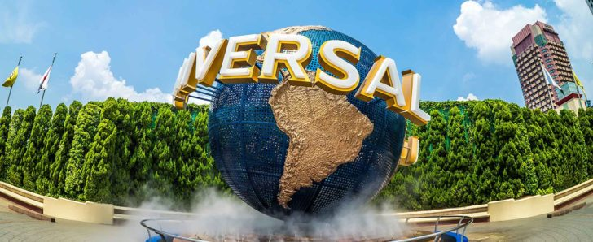
2022○月○日 記日
ふだんよりワンランクUP、いざUSJへ!
ユニバーサル・スタジオ・ジャパン
（英: Universal Studios Japan、
通称：USJ）は、日本の大阪にあるテーマパーク。
世界に6つあるユニバーサル・スタジオ・テーマパークスの一つで、
さまざまな表情を持つエリアは、
驚きと感動がいっぱいの別世界。
ハリウッドの超大作映画をテーマにした、
興奮のライドや人気キャラクターのショーなど、
子供から大人まで楽しめます。
ここからは私がリスペクトした、
USJの魅力溢れる場所や商品の紹介です。
目次
- ウィザーディング・ワールド・オブ・ハリー・ポッター™
- ハリウッド・エリア
- ルイズ N.Y. ピザパーラー
- ウォーターワールド
※便利な地図はこちらをご覧ください。
USJフォト📸
- 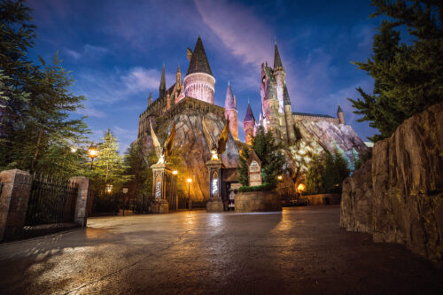
- 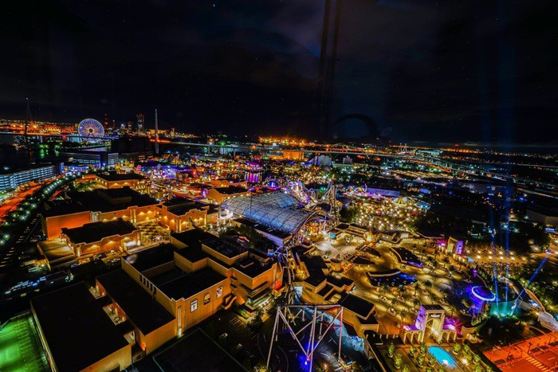
- 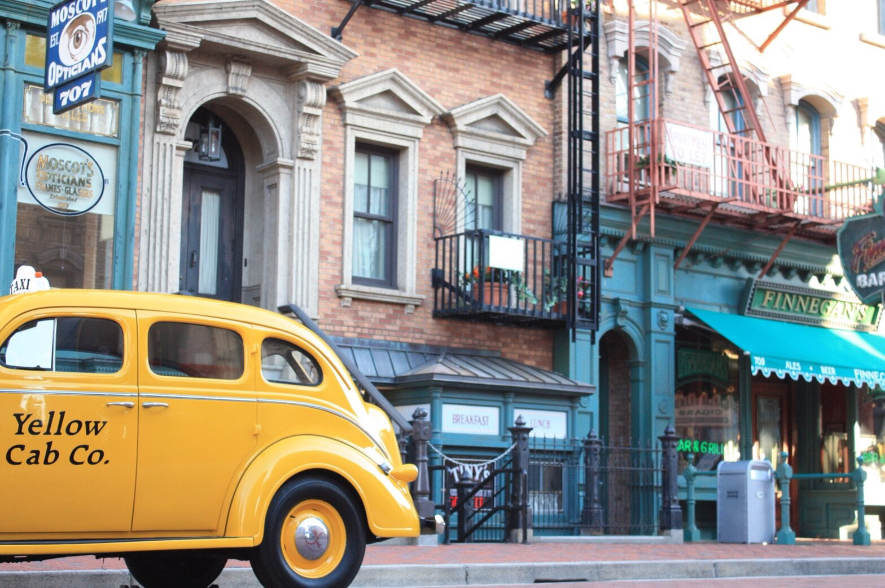

- 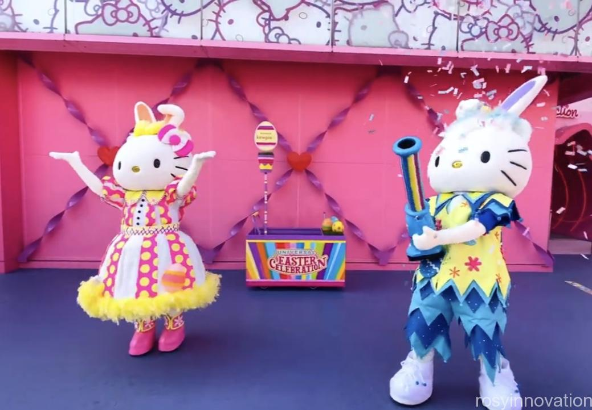
- 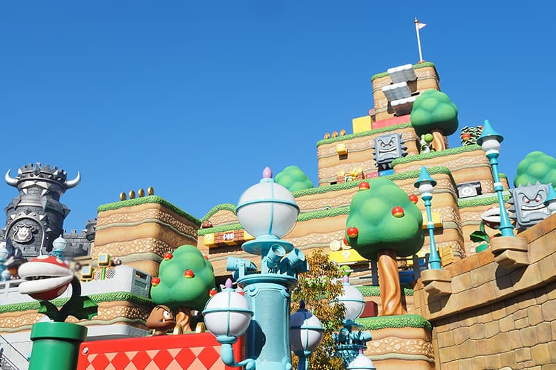
1.ウィザーディング・ワールド・オブ・ハリー・ポッター™
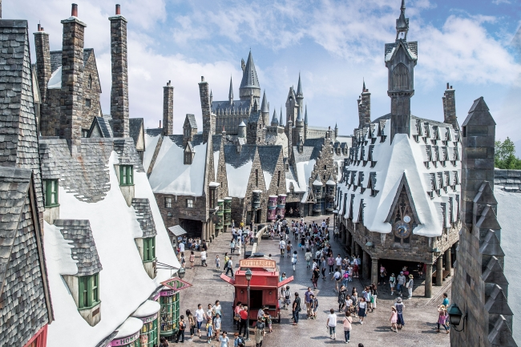
ウィザーディング・ワールド・オブ・ハリー・ポッター™は、
原作者のJ・K・ローリングや映画の美術スタッフも関わって建設されました。
禁じられた森やホグズミード村をモチーフにしたショップやレストラン、
アトラクションがあります。
『ハリー・ポッター』の世界が忠実に再現され、ハリーポッターの世界に入ったかのように感じられます。
夜には、ホグワーツ城がライトアップされ、壮大感が出ます。
魔法の世界の魅力がたくさんあり、
写真映えするところもたくさんあります。
📸オススメフォトスポット📸
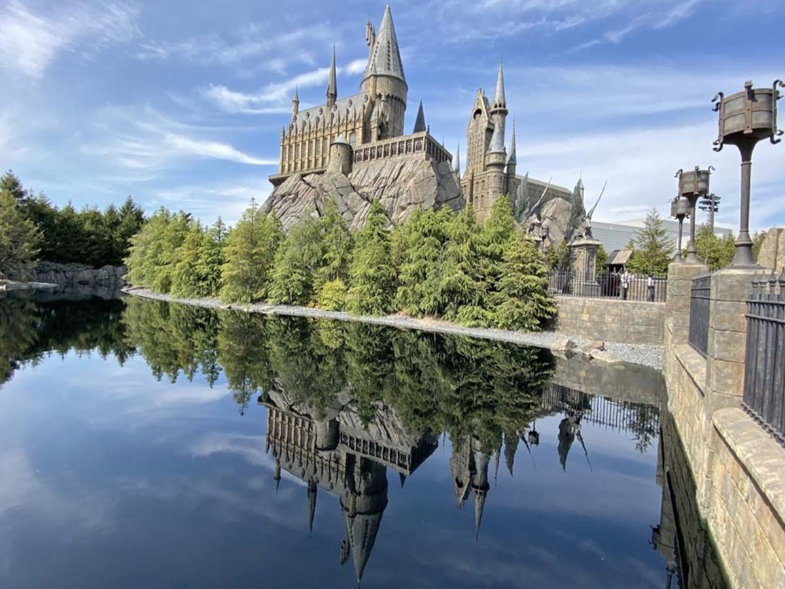
このフォトスポットでは、湖に反射するホグワーツ城などが魅力です。
2.ハリウッド・エリア
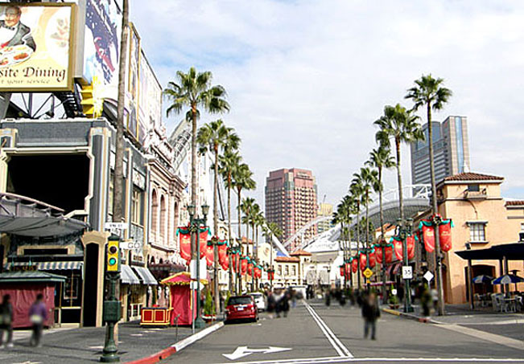
パークの入場ゲートを入ってすぐのエリアで、
アトラクションやショップが最も集中します。
エリア内には映画などの撮影セットを再現した
建物が建ち並び、
1930〜1940年代のスターたちが
行き交った華やかなハリウッド大通りの
街並みを再現しています。
🎢オススメアトラクションとフォトスポット📸
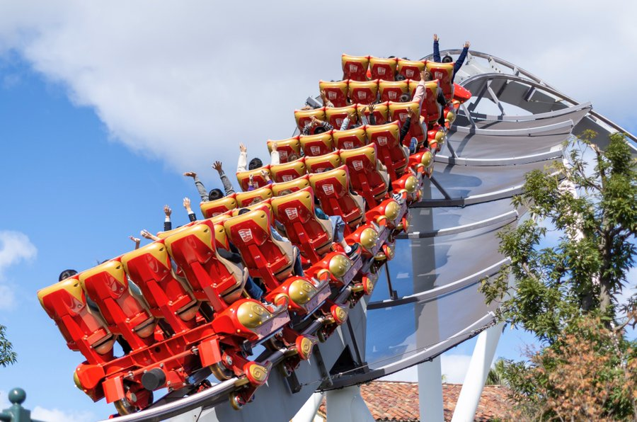
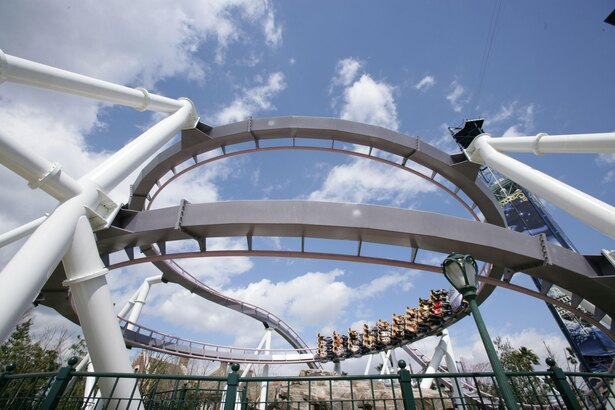
ハリウッド・エリアにあるハリウッド・ドリーム・ザ・ライドは
前向きと後ろ向きで進む二種類があり、
後ろ向きに進むバックドロップは車体が赤色で鮮やかなので、
写真映えします。
走行中のライドが二回転するところでは、
見上げると幻想的な光景が見れます。
3.ルイズ N.Y. ピザパーラー
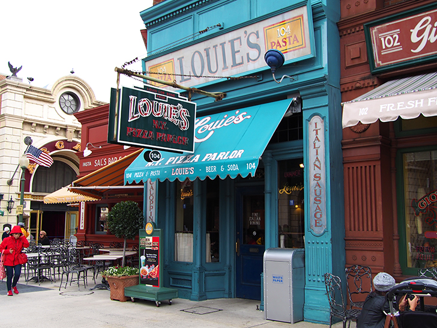
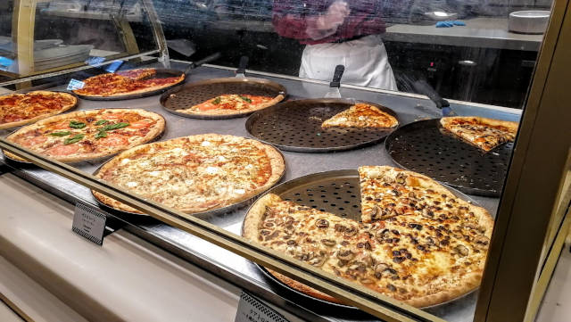
ビッグサイズの本格派ピザを味わえる、
ニューヨーク・リトルイタリーのピザパーラー。
ピザとパスタが主なメニューのレストラン。
外観は1930年代のニューヨークをイメージして作られ、
店内は映画「ゴッドファーザー」をモチーフにしています。
ピザなどの他、
店内でサーティーワンのアイスも販売しています。
pizzaの写真🍕
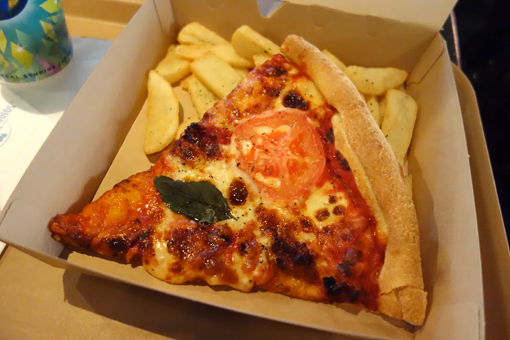
このピザはニューヨークエリアのルイズ N.Y. ピザパーラーで売っている本格的なマルゲリータです。
チーズがふんだんに使われており、内側はトロっッと外側はパリッと仕上がっています。他にもたくさんの
サイドメニューや飲み物があり、品揃えが豊富です。丸々の1ホールもあるので、家族や友達などで一緒にたべることも出来ます。
4.ウォーターワールド
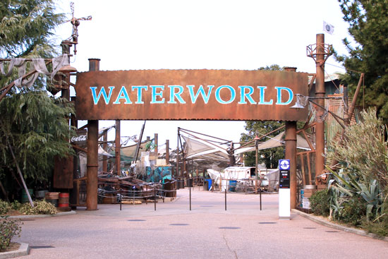
このウォーターワールドでは、大人気のアクション・ショーが進化し、映画そのままの
壮絶スタントを体験することが出来ます。一新されたサラウンド音響システムにより、
爆発や銃撃に巻き込まれたかのような圧倒的臨場感に包まれ、
緊迫感あふれる水上バトルの真っただ中に、入り込んだかのようになります。
😲衝撃的瞬間と感動👏
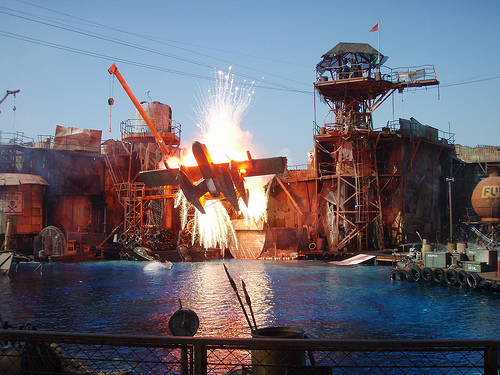
迫力のある登場やアクションが満載で、花火や音響などに合わせ
決闘が繰り広げられ、見ごたえのあるショーになっています。
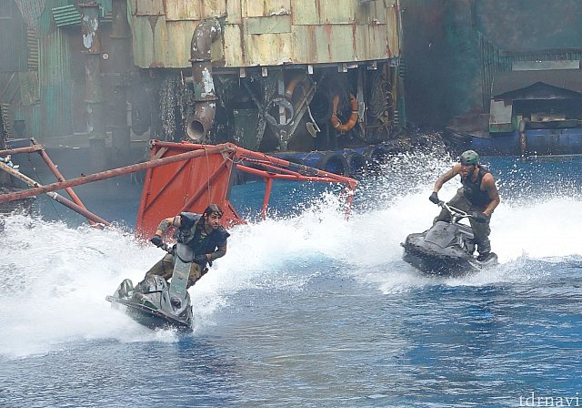
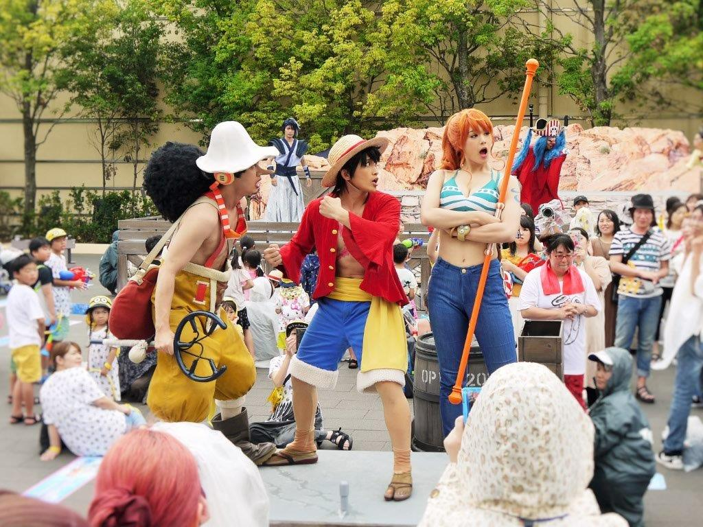
ウォーターワールドでは、クールジャパン期間に有名な国民的アニメ・ワンピースとコラボし、
ワンピースの世界に入ることができます。シーズンごとに新しい登場人物も増えます。
見どころ満載のショーになります。
・・・・・・・・・・・・・・・・・・・・・・・・・・・・・・・・・・・・・・・・・・・・・・・・・・・・・・・・・・・・・・・・・・・・・・・・・・・・・・・・・・・・・・・・・・・・・・・・・・・・・・・・
@mokomoko0913